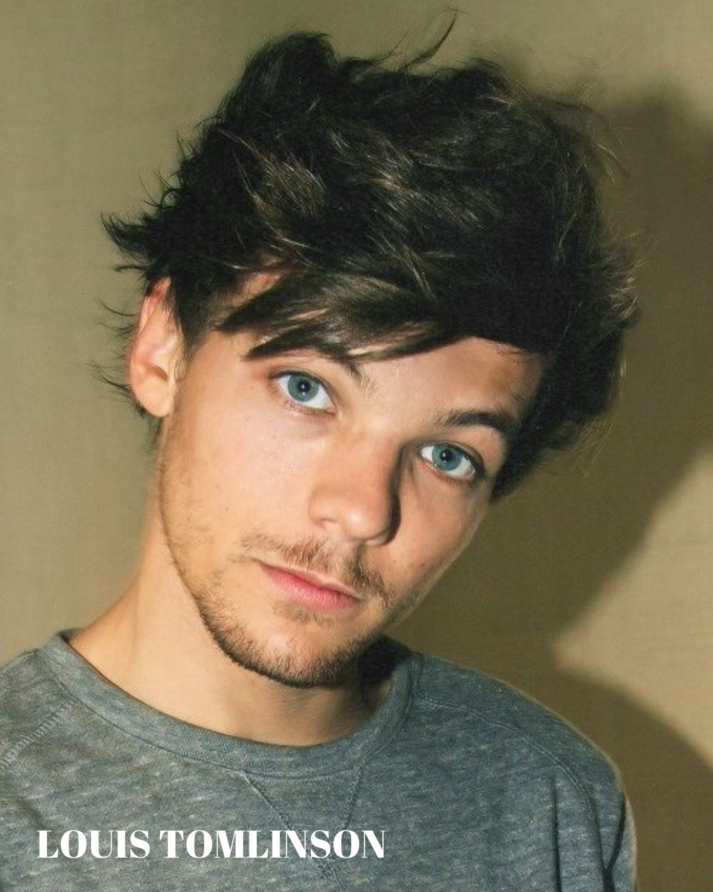
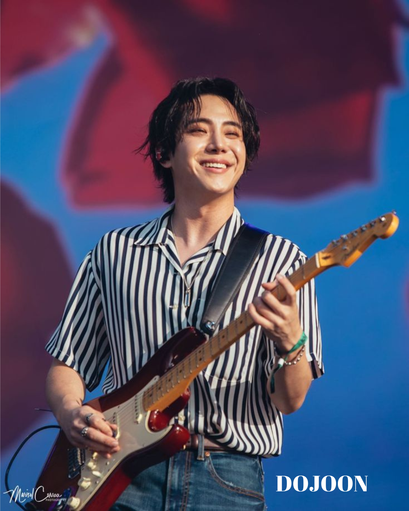
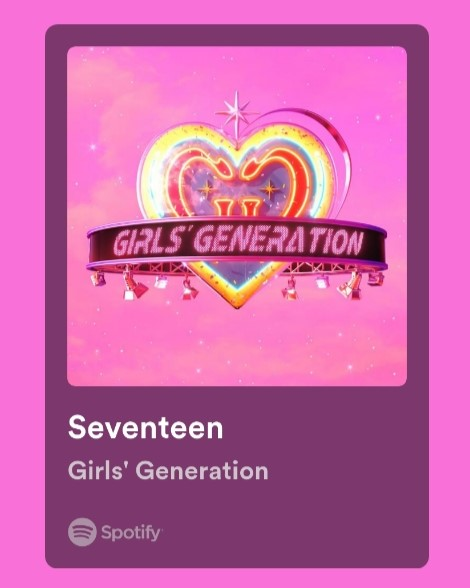

Today's Album Hits
One Direction, often shortened to 1D, are an English-Irish pop boy band formed in London in 2010.
The group is composed of Niall Horan, Liam Payne, Harry Styles, Louis Tomlinson, and Zayn Malik.
They became one of the best-selling boy groups of all time before going on an indefinite hiatus in 2016.
Music Genre: Dance-Pop, Teen Pop, and Pop Rock.

The Rose (Korean: 더 로즈) is a South Korean indie-rock band under their company Windfall and partnered up with Transparent Arts.
The band is composed of four members: Kim Woo-sung (vocals, guitar), Park Do-joon (keyboard, vocals), Lee Ha-joon (drums), and
Lee Jae-hyeong (bass). Prior to its debut with J&Star, the band had long been a popular indie group before making its official
mainstream release with "Sorry" on August 3, 2017.
Music Genre: Pop Rock, Indie pop, and Indie Rock.

Taylor Alison Swift (born December 13, 1989) is an American singer-songwriter.
Her songwriting, artistry, and entrepreneurship have majorly influenced the music
industry and popular culture, and her life is a subject of widespread media coverage.
Music Genre: Pop, Country, Folk, and Rock.

Girls' Generation (Korean: 소녀시대; RR: Sonyeo Sidae), also known as SNSD, is a South Korean girl group formed by SM Entertainment.
The group is composed of eight members: Taeyeon, Sunny, Tiffany, Hyoyeon, Yuri, Sooyoung, Yoona, and Seohyun.
Originally a nine-piece ensemble, member Jessica departed from the group in September 2014. Among the prominent
South Korean figures and most popular K-pop groups worldwide, Girls' Generation has earned numerous accolades and
the honorific nickname "The Nation's Girl Group" in their home country.
Music Genre: K-Pop


Baek Ye-rin (Korean: 백예린; born June 26, 1997), also known as Yerin Baek, is a South Korean singer-songwriter.
A former member of South Korean duo 15&, she debuted as a solo artist with her extended play, Frank, in 2015.
Baek is credited with writing and composition for the majority of her songs, often touching on personal topics and real-life experiences.
In addition to her solo career, she is also the lead vocalist and guitarist for the South Korean rock band The Volunteers and has been performing with them since 2018.
Music Genre: KR&B/Soul